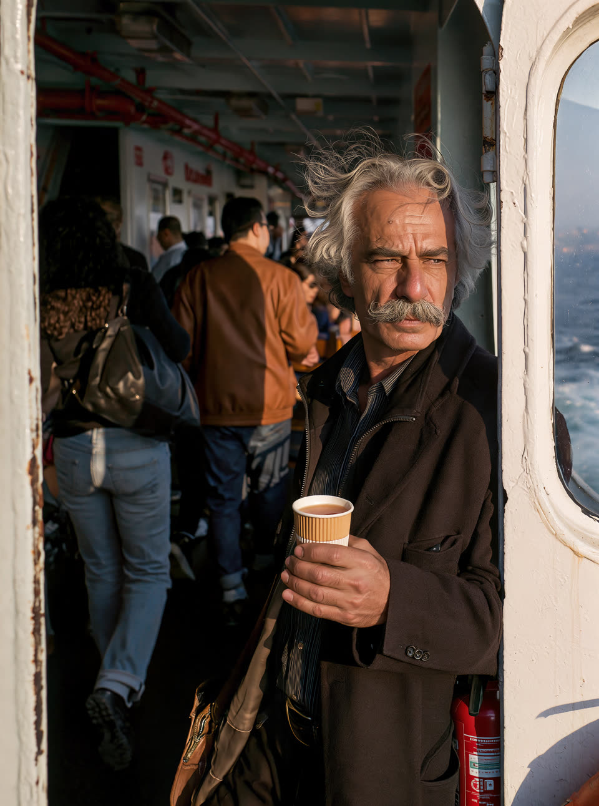

Kling Image 4.0 official documentary still: elderly man at a ferry-cabin doorway, paper cup at chest, warm low sun on one side, dim cabin crowd on the other
REA-090RealismKling Image 4.0by Kling AI (official)2026-11-18

Official "Documentary Photography" example from the Kling Image 4.0 User Guide. The prompt reads like a photographer's shot note: camera height ("roughly level with the elderly man's chest to eyes"), exactly what sits on each edge of the 3:4 frame (doorframe, porthole with blue-gray sea, a red fire extinguisher in the lower-right corner), where the light comes from (warm low-angle sun from front right), what stays dark, and an explicit "Preserve facial details without using uniform fill lighting". Strong start frame for a quiet documentary-style ad beat.
Prompt
3:4 vertical composition, a close-up documentary street portrait at the entrance of a ferry cabin. The camera is positioned at a height roughly level with the elderly man's chest to eyes. An elderly man with tousled silver-white curly hair, a thick white beard curling outward on both sides, and clearly defined facial wrinkles stands slightly to the right of center. He leans against the white cabin doorframe on the right, wearing a dark brown, almost black coat over a dark pinstriped shirt. His right hand holds a light yellow corrugated paper cup containing a drink at chest level. His body is angled slightly toward the camera, while his face turns to the right. His expression is calm, and he does not look at the camera. Along the right edge is a thick white doorframe and part of a rounded porthole, through which the blue-gray sea is visible. A red fire extinguisher is partially visible beside the door in the lower-right corner. The left half of the frame shows the dimly lit interior of the ferry cabin, where several passengers are walking away from the camera. A man in a brown jacket is in the middle background, while a person wearing light blue jeans and carrying a black backpack is visible on the left. Warm, low-angle sunlight from the front right illuminates the elderly man's forehead, nose, beard, and the back of his hand. The cabin interior remains noticeably dark, while the sea outside has cooler tones. Preserve facial details without using uniform fill lighting. Keep the elderly man and the paper cup in sharp focus, with the passengers inside the cabin slightly blurred, retaining a natural sense of crowding.
Our Seedance 2.5 adaptation
[ADAPTED for Seedance 2.5 by Grok Bot; not the creator's prompt. Follows the official BytePlus Seedance 2.5 prompt guide and its official sd25-pe prompt-optimizer skill: parameters only on the API line (not in the prompt body), subject + action + scene, then visuals, camera (move, subject, start, direction, arrival) and sound; only the source's own exclusions are kept.] API: duration 6, ratio 3:4 (taken from the first frame), resolution 1080p (4k for a final), generate_audio true; first_frame = the REA-090 still. 【Subject】The elderly man exactly as in the first frame: silver-white curly hair, thick white beard, dark coat over a pinstriped shirt, leaning on the white cabin doorframe with a pale yellow paper cup at chest level. 【Action】He lifts the cup, takes one slow sip, lowers it back to his chest and keeps looking out to the right, not at the camera; the wind moves his beard slightly. Behind him, passengers in the dark cabin keep walking away from camera. 【Camera】Handheld at his chest-to-eye height, almost still, with a slight breathing sway; no push, no cut. 【Visuals】Warm low sun from front right on his forehead, nose, beard and hand; the cabin interior stays dark; the sea through the porthole is cool blue-gray. Natural documentary texture, no uniform fill light. 【Sound】Ship engine hum, water against the hull, distant gulls, muffled passenger footsteps. No music.
Tags: Kling Image 4.0, official example, documentary portrait, ferry cabin, 3:4, camera height, edge-by-edge layout, low-angle sun, no uniform fill, image